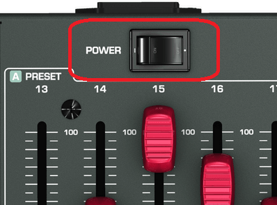
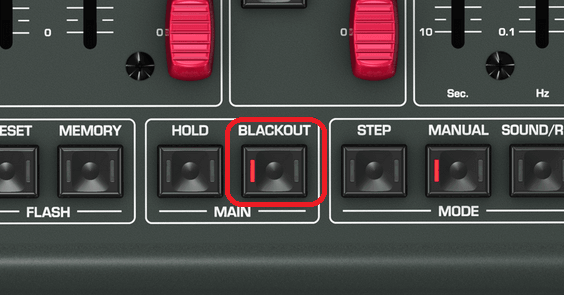
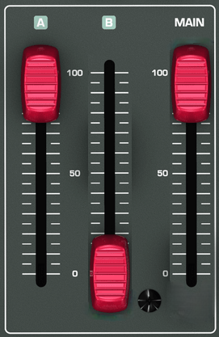
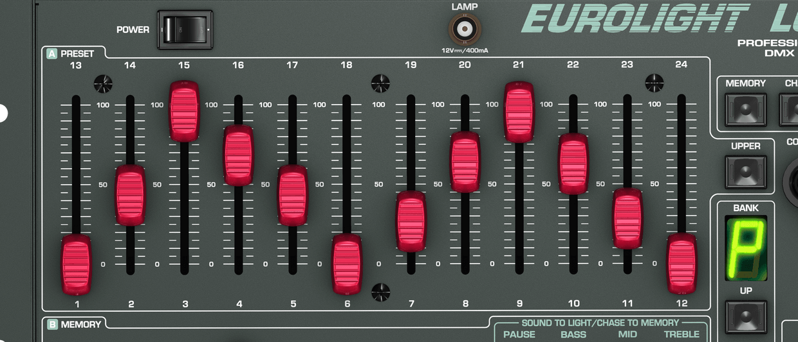

Steg 1: Trykk på POWER knappen. Dette skrur på strømmen.
Steg 2: Hvis BLACKOUT knappen blinker, trykk en gang på den.
Steg 3: Pass på at slideren det står MAIN på er på topp. Slideren med A på skal også være på topp, og slider B bør være ned på 0
Steg 4: Ferdig! Du kan flytte opp og ned på sliderne med innenfor PRESET, og lyskasterne vil lyse med de fargene. (Pass på at UPPER er av)
